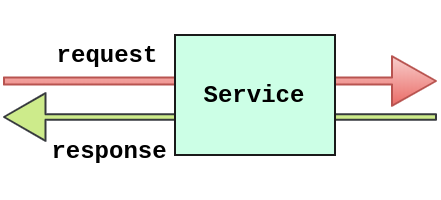
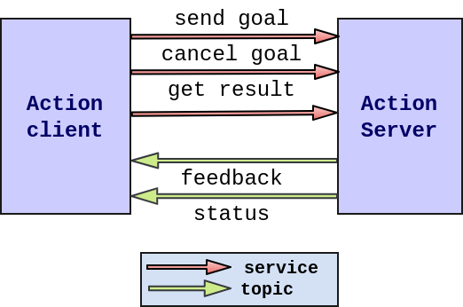

layout: true <div class="header"><img src="https://rosin-project.eu/wp-content/uploads/rosin_ack_logo_wide.png" style="background-color:transparent"/></div> <div class="footer"><img src="https://www.ipa.fraunhofer.de/content/dam/ipa/ipa.svg" /><p>© Fraunhofer IPA</p></div> <div class="triangle"></div> <head> <style type="text/css"> code { background-color: #273746; color: #fcf3cf; } pre code { background-color: #273746 ; border: 1px solid #999; display: block; padding: 20px; } </style> </head> --- class: center, middle # ROS2 Communication ## Extended concepts --- name: contents ## Contents - ROS2 Services - ROS2 Actions - ROS2 Params - ROS2 Launch files --- class: center, middle # ROS2 Services --- name: services ## Services in ROS2 - A mechanism for a node to send a request to another node and receive a response in return - Similar to remote procedural calls that terminates quickly - Example: spawning a robot into an environment <div> <center>  </center> </div> --- name: service_file ## Service file structure - Data structure for services - Defined by a pair of messages: Request and Reply. - \*.srv is a file with field type and name - Request and Response are separated by `---` - Use `ros2 interface show <type_name>.srv` to know the service file structure <figure> <pre> <code> #request int8 a int8 b --- #response int8 sum </code> </pre> </figure> --- ## Service Server and Clients - There can be only one service server for a ROS2 service. - Multiple server clients can use the same service server. - Server decides how goals from multiple clients will be handled simultaneously. <div> <center> <img src="../static/service_clients.png" width="600px"> </center> </div> --- class: center, middle # ROS2 Actions --- name: actions ## Actions in ROS2 - Used for tasks that - <b>Longer execution time</b> - <b>Requires preemption</b> - <b>Requires regular feedback</b> - Example. Path planning in navigation - Actions are a combination of services and topics - Action interface Definition - <b>Goal</b>: What action to achieve and how to. - <b>Feedback</b>: Progress towards completing the action - <b>Preempt</b>: To preempt the action that is being executed - <b>Result</b>: Outcome of an action <div> <center>  </center> </div> --- ## Actions Client and Server - Action clients send goal and result requests to action servers - Action servers execute goal and provide feedback and results to action clients - Feedback uses topics whereas Goal and Result uses services. <div> <center> <img src="../static/action_detailed.png" width="900px"> </center> </div> --- name: action_file ## Action File structure - Data structure for Actions - Defined by a set of messages: Goal, Result and Feedback. - \*.act is a file with type and name with fields separated by `---` # Define a goal of washing all dishes bool heavy_duty # Spend extra time cleaning --- # Define the result that will be published after the action execution ends. uint32 total_dishes_cleaned --- # Define a feedback message that will be published during action execution. float32 percent_complete uint32 number_dishes_cleaned --- class: center ## Actions vs Services <style type="text/css"> .tg {border-collapse:collapse;border-color:#aabcfe;border-spacing:0;margin:0px auto;} .tg td{background-color:#e8edff;border-color:#aabcfe;border-style:solid;border-width:1px;color:#669; font-family:Arial, sans-serif;font-size:14px;overflow:hidden;padding:10px 5px;word-break:normal;} .tg th{background-color:#b9c9fe;border-color:#aabcfe;border-style:solid;border-width:1px;color:#039; font-family:Arial, sans-serif;font-size:14px;font-weight:normal;overflow:hidden;padding:10px 5px;word-break:normal;} .tg .tg-z9lx{background-color:#cbcefb;border-color:inherit;color:#010066;font-size:16px;text-align:left;vertical-align:top} .tg .tg-2m3o{background-color:#9698ed;border-color:inherit;color:#010066;font-size:16px;font-weight:bold;text-align:center; vertical-align:top} </style> <table class="tg"> <thead> <tr> <th class="tg-2m3o">Actions</th> <th class="tg-2m3o">Services</th> </tr> </thead> <tbody> <tr> <td class="tg-z9lx">Intended for longer running tasks</td> <td class="tg-z9lx">For tasks that terminated quickly</td> </tr> <tr> <td class="tg-z9lx">Preemptable</td> <td class="tg-z9lx">Not preemptable</td> </tr> <tr> <td class="tg-z9lx">Consists of goal, result and feedback</td> <td class="tg-z9lx">Consists of request and response</td> </tr> <tr> <td class="tg-z9lx">Provides steady feedback</td> <td class="tg-z9lx">Provides a single response</td> </tr> </tbody> </table> --- class: center, middle # ROS2 params --- name: parameter ### ROS2 params(1/5) - A nice way to set parameters at run time, without having to recompile the code for the node. - These parameters can be dynamically reconfigured using ROS2 services. - Note: ROS2 uses a decentralized parameter system. <pre><code class="language-ruby"> def __init__(self): super().__init__('test_params_rclpy') self.declare_parameter('my_str') self.declare_parameter('my_int') param_str = self.get_parameter('my_str') param_int = self.get_parameter('my_int') self.get_logger().info("str: %s, int: %s" % (str(param_str.value), str(param_int.value))) </code></pre> ##### Setting the ros2 params in command line. <pre><code class="language-sh"> ros2 run ros2_tutorials test_params_rclpy --ros-args -p my_str:="Hello world" -p my_int:=5 </code> </pre> --- name: parameter ### ROS2 params(2/5) #### YAML for ROS2 params - Managing parameters when number of params increases becomes complex. - Adding them in command line is not an option - **YAML** is more human readable and Great for loading a configuration file at run time <pre><code class="language-yaml"> # Package architecture your_package/ ├── config │ └── params.yaml ├── launch │ └── test_params.launch.py ├── package.xml # params.yaml Node_A: ros__parameters: bool_value: True float_number: 3.14 str_text: "Hello Universe" </code> </pre> --- name: parameter ### ROS2 params(3/5) #### Loading YAML config to Node <pre><code class="language-yaml"> def __init__(self): super().__init__('your_amazing_node') self.declare_parameters( namespace='', parameters=[ ('bool_value', None), ('float_number', None), ('str_text', None) ]) </code> </pre> ##### From command line <pre><code class="language-yaml"> ros2 run pkg_name node_name --ros-args --params-file .~/locate_pkg/config/params.yaml </code> </pre> --- name: parameter ### ROS2 params(4/5) ##### From launch file <pre><code class="language-python"> def generate_launch_description(): ld = LaunchDescription() config = os.path.join( get_package_share_directory('ros2_tutorials'), 'config', 'params.yaml' ) node=Node( package = 'ros2_tutorials', name = 'Node_A', executable = 'test_yaml_params', parameters = [config] ) ld.add_action(node) return ld </code> </pre> --- name: parameter ### ROS2 params(5/5) ##### For a Python package, in “setup.py”: <pre><code class="language-python"> ... data_files=[ ('share/ament_index/resource_index/packages', ['resource/' + package_name]), ('share/' + package_name, ['package.xml']), (os.path.join('share', package_name, 'launch'), glob('launch/*.launch.py')), (os.path.join('share', package_name, 'config'), glob('config/*.yaml')) ], ... </code> </pre> [References for ROS2 Params](https://roboticsbackend.com/rclpy-params-tutorial-get-set-ros2-params-with-python/) --- class: center, middle # ROS2 Launch files --- ## Launch files ##### A launch files are used for: - Describing the configuration of the system and execute as described - Configuration of the system includes - What program to run - Where to run them - What arguments to pass to them - Loading of parameters - Remapping topic names, parameters, etc. --- ## Creating Launch files(1/3) - ROS2 Launch files are coded in python - They are executed by ROS2 CLI tool, `ros2 launch` - Create a `launch` directory inside your package as given below src/ my_package/ launch/ setup.py setup.cfg package.xml - Create a launch file with `<launch_filename>.py`inside `launch` directory --- ## Creating Launch files(2/3) <pre><code class="language-python"> #Edit launch_filename.py from launch import LaunchDescription from launch_ros.actions import Node def generate_launch_description(): ld = LaunchDescription() node_1 = Node( package="ros2_tutorials_py", executable="node_1" ) node_2 = Node( package="ros2_tutorials_cpp", executable="node_2" ) node_3 = Node( package='turtlesim', executable='mimic', name='mimic', remappings=[ ('/input/pose', '/turtlesim1/turtle1/pose')) </code> </pre> --- ## Creating Launch files(3/3) <pre><code class="language-python"> ld.add_action(node_1) ld.add_action(node_2) ld.add_action(node_3) return ld </code> </pre> - Use `colcon build` and source workspace and then use ros2 CLI. ``` ros2 launch <package_name> <launch_file_name> ``` - Launch files simplify running complex systems with many nodes and specific configuration details. --- <h1> <center> Thank You </center> </h1> <div> <center> </center> </div> <h2> <center> Questions ? </center> </h2>